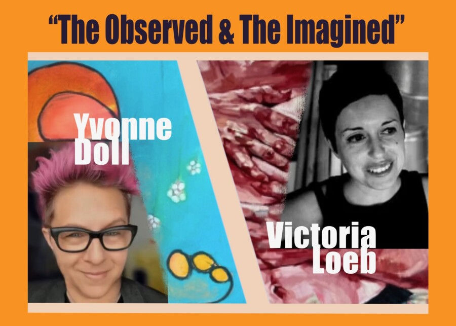

The Observed & The Imagined: Closing Reception
CHICAGO — 6311Arts invites the public to a closing reception for The Observed & The Imagined on Friday, May 8, 2026, from 6–9 p.m., offering visitors a final opportunity to experience the exhibition and meet featured artists Yvonne Doll and Victoria Loeb.
Presented in the gallery’s main space, The Observed & The Imagined brings together two distinct but resonant artistic voices, exploring the space between perception, memory, and invention through abstraction, gesture, and richly layered visual storytelling. The exhibition is complemented by works from ten local photographers installed throughout the east and west galleries.
The May 8 reception serves as a culminating evening for the exhibition — an invitation for a final look, conversation with the artists, and connection with fellow members of Chicago’s North Side arts community.
During the exhibition’s final week, collectors will have the opportunity to acquire most works at 15% below listed price, with select pieces available at reductions of 25–30%. Special pricing will be offered May 3 through May 9.
As part of its ongoing mission, 6311Arts continues to create approachable opportunities for neighborhood audiences to engage with original work by Chicago artists in an intimate and welcoming gallery setting.
Closing Reception
Friday, May 8, 2026
6–9 p.m.